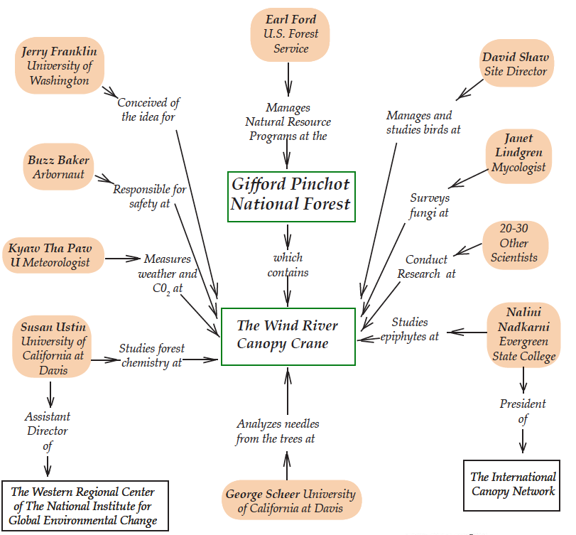

{ TOC }-{ Chapter 1 }-{ Chapter 2 }-{ Chapter 3 }-{ Chapter 4 }-{ Chapter 5 }-{ Chapter 6 } Chapter 4: Field Trip to Wind RiverThe U.S. Change Global Research Program
An important aspect of our new world view is that everything is connected to everything else. Changes in forest ecosystems affect rivers and streams, as well as the atmosphere and climate. Therefore, it is important for scientists who research Earth systems to coordinate their efforts. In 1990, all federal studies concerning global environmental change were organized under the U.S. Global Change Research Program (USGCRP). The USGCRP coordinates the work of thousands of people, working in hundreds of studies, all aimed at documenting, understanding, and predicting changes in the global environment. The benefits of this coordination are not difficult to understand. Images from satellites taken over many years show changes in the Earth’s forests, deserts, and glaciers. The satellite data is used by researchers on the ground who study the natural processes and human activities that cause environmental change. Other scientists use the results of this research to predict how the environment will change in the future, and to anticipate the impact of those changes on food production, fisheries, health, weather, and the economy. In the rest of this chapter you’ll look closely at one of the many projects coordinated by USGRP—the Canopy Crane at Wind River. The graphic on the next page shows the relationship of the Wind River project to other USGCRP projects (see http:www.usgcrp.gov). The National Institute for Global Environmental Change (NIGEC) NIGEC operates projects in six regions of the United States to determine the social and economic impact of global change. Its Wind River project uses a construction crane to make measurements within the canopy of an old growth forest, enabling scientists to study the interaction between the forest and the atmosphere. The National Oceanic and Atmospheric Administration (NOAA) maintains an extensive program of research around the world to understand the interaction of the atmosphere and the oceans. An important focus of this work for 1998 is to improve predictions of long-term climate change, and to determine how climate change may impact areas such as agriculture, fisheries, weather, and human health. NASA’s Earth Science Enterprise (ESE) is aimed at understanding the Earth system, including both natural processes and the impact of human actions. Once called the “Mission to Planet Earth,” ESE programs include observations by satellites and aircraft to monitor changes in the land, atmosphere, ice, oceans, plants, and animals.
Why Build a Crane in an Old Growth Forest? The Wind River Canopy Crane is a huge electric-powered construction crane that enables scientists to make regular observations of the forest ecosystem. According to David Shaw, the site director for the project, “Getting the Canopy Crane into the forest and erected without destroying the site has been the biggest challenge. Great pains have been taken to do as little damage as possible.” For years the forest ecologists have struggled to collect samples from areas such as treetops and the ends of branches, and to see into dense foliage to identify species of plants and animals. It was virtually impossible for them to measure conditions in the air between the tree tops. Professor Jerry Franklin from the University of Washington—one of the world’s foremost forestry scientists—proposed that a crane be erected in the forest to solve these and other problems. Dr. Franklin realized that the crane could place a scientist anywhere within a large area of the forest—with heavy equipment when needed—in a matter of minutes. The authors visited the Canopy Crane to see global systems science in action.
Where the treetops comb the clouds
The view is magnificent. Fog nestles among low hills in the distance. The tall trees seem to brush through the clouds like a comb through soft white hair. The treetops below us form a richly textured carpet of green and brown. Slowly, the crane begins to rotate, swinging us in a huge circle over the trees. Below us pass the tops of Douglas fir and hemlock trees, with a few cedar and other species. The oldest of these trees started as seedlings 400 to 500 years ago. As we swing over the treetops we notice several standing trunks of dead trees called snags, and old wood lying on the forest floor. Although not as beautiful as the living trees, the decaying wood offers a variety of nesting places for many species of birds. Viewed from above, the upper foliage, or canopy of the forest is not as dense as we expected. The larger trees are not too close together, so that in some places we can look all the way down to the smaller trees, shrubs, and ferns. These lower-level plants are called the understory. During our ride in the crane, and for the next couple of days, we listened to the fascinating stories of the scientists who work here on a regular basis. In this chapter, you’ll meet some of these people, and they’ll tell you how they conduct their work. After each of the interviews, we’ll also comment on how these scientists apply the concept of a system. A system is a group of interacting parts that functions as a whole. Systems thinking is one of the most powerful new approaches to the study of our planet. David Shaw: Searching for Interactions
“The Canopy Crane has made it possible for us to study the way birds are distributed in an old growth forest. To do this study, all of our observers have been trained to recognize dozens of different kinds of birds by sight and by their song. They make observations from the gondola once a week, starting when the birds are most active—at sunrise. “First, the crane carries the observer to the north of the central tower, and lowers the gondola so it is ten meters below the treetops. This is the upper canopy. The observer waits silently for a few minutes to allow the birds to return to their normal behaviors. Then, for exactly five minutes, the observer identifies as many birds as possible, writing them down in a chart. Next, the crane operator lowers the gondola to 30 meters below the treetops, so the observer can identify birds at the mid-canopy level. Finally, the gondola is lowered to 50 feet below the treetops for another five-minute observation period. The gondola is then drawn all the way up, and the measurements are repeated on the East, South, and West sides of the tower. “We’ve been collecting data for two years, and our analysis is not yet complete. However, we do have some preliminary conclusions. Our initial theory was that year-round residents would use the entire canopy; while migrating birds would use just part of the canopy. As it turned out, a lot has to do with beak structure and feeding habits, not just whether or not they live in the canopy year-round. For example we have a red crossbill that feeds on seeds from cones that are still hanging on the tree; so we rarely see them in the lower canopy. On the other hand, the chickadees and other year-round resident are seen throughout the whole canopy. “Keep in mind that we’re just getting started. We’d like to compare our results with other old growth forests, clear cut areas, and tree plantations. Other researchers have found that when a forest is clear cut there are lots of birds that enjoy open spaces. As the trees grow, the branches of adjoining trees start to touch, and the canopy closes. The smaller plants and shrubs begin to die without sunlight, and the number and variety of birds goes down. After many years, if the forest is not cut down, trees mature and die, opening spaces in the forest where smaller shrubs and new trees can begin to grow, opening up new opportunities for different species of birds. When you finally reach the old growth condition, you again get a fairly diverse and abundant bird community. “For example, the northern spotted owl is an endangered species that appears to require a huge area of old growth forest to survive. They need large dead snags or live trees with big holes or broken tops for nesting. While they use the whole canopy for nesting, they use the lower canopy for hunting, perching on a branch and watching the forest floor for any sign of movement. Their favorite prey, flying squirrels, feed on fungi, which are abundant in the old growth forests. Dr. Shaw said his personal goal is to learn about ecosystems so he can protect forests of all types, including tree plantations. And that involves studying not only the trees and the birds, but also the plants and insects that make up their diets, and the conditions of the atmosphere and soil that enable the entire ecosystem to develop and thrive.
Dr. Shaw’s work points out three fundamental ideas about systems. The first is that systems change on short and long time scales. Some of the changes in a forest are abrupt. A fire or a clear cut logging operation can drastically change the system within a few hours. Others changes are gradual, as when a clear cut area grows into an old growth forest over a century or two. Still other changes are cyclic, such as the day-night cycle. Dr. Shaw’s research focuses on how various bird species respond to the seasonal cycle. The second is that interactions within a system may not always be obvious. Dr. Shaw and his colleagues found some surprises when they observed which parts of the forest were inhabited by local bird species. Some, like the chickadee, fit their expectations of using the entire canopy, while others, like the red crossbill, were only found in the upper canopy, where they could find cones with seeds. Such surprises are not unusual in ecosystem research. The third is that systems have boundaries. Boundaries can be sharp or fuzzy. A lake or clear cut area may sharply define the edge of a forest, or there may be a gradual transition area between a forest and grassland. Identifying and studying what occurs at the boundaries is an important part of ecosystem science. For example, Dr. Shaw said the upper, middle, and lower canopy formed subsystems within the forest canopy, but he did not know exactly where the boundaries were. Ten, thirty, and fifty meters below the treetops was his best guess.
Janet Lindgren: What Parts of the System are Essential?
At the time of our visit a complete survey of fungi was underway at the Canopy Crane site. The scientist conducting the survey has spent much of the past 30 years exploring these forests, noting and identifying thousands of species of fungi. On this particular trip, Janet Lindgren was looking for a tiny orange mushroom that scientists had previously only found on the forest floor. However, she suspected it might be carried to the tree tops by squirrels. We checked the tops of several Douglas firs to see if we could find any. Unfortunately, the search was unsuccessful. Later, however, during a short trek through the forest she found a rare black fungus that we would have missed, thinking it was a piece of dirt or a rock. In finding the rare species she was faced with a dilemma: “Do I take a sample back and preserve it in a museum? Or, do I let this one keep growing, in the hope that it will reproduce?” Luckily, we found another specimen so she was able to take one back and allow the other to reproduce. As we walked back to the Canopy Crane headquarters, Ms. Lindgren told us how she helps doctors when their patients have eaten poisonous mushrooms. There are many immigrants in the area from Southeast Asia who, in their former homes, picked edible mushrooms in the woods. In the United States, they found mushrooms that are similar in appearance. Unfortunately, many of the local varieties are poisonous. Ms. Lindgren is called in to talk with the families, asking for a precise description of the mushrooms, including their size, shape, color, and where they were found, so she can identify the species and determine if there is an antidote.
One of the reasons that Janet Lindgren, David Shaw, and others are conducting research at the canopy crane site, is because scientists do not yet know enough about Earth systems to determine which elements are essential and which are not. Janet Lindgren showed us that although the huge trees are the most visible elements of the forest ecosystem, other elements of the system are important as well. Even tiny, barely noticeable fungi may have important roles in the survival of other species; and knowing about them could save someone’s life! Consider, for example, what happens if your car’s wheel falls off. Obviously, each wheel is important because if you’re missing just one of them the car won’t go anywhere. On the other hand, less visible parts, like the spark plugs and ignition key, are just as important in getting the car to work. But if the cigarette lighter is missing, it won’t affect the operation of your car. That is why it is equally as important—from an ecosystem viewpoint—to study the fungi as it is to study the trees. "The climate affects the forest and the forest affects the climate."
Susan Ustin: Scaling Up from Small to Large Systems
As a child, Susan Ustin always enjoyed being outdoors. In high school she discovered she liked biology, and in college she found that her special interest was botany—the study of plants. She eventually earned a Ph.D. degree in plant ecology, and a few years ago she was appointed Assistant Director of the Western Region of the National Institute of Global Environmental Change. We interviewed Dr. Ustin in her hard hat, while riding high above the trees. She explained that her unique perspective in the field of botany came from her first job. “When I finished my degree I had an opportunity to work with a group at the Jet Propulsion Laboratory in Pasadena. They were just starting a new program in airborne imaging spectrometry—that’s taking a special kind of picture from an airplane that shows the various colors reflected by the landscape. At the time, we expected the images would allow us to measure the plant chemistry over a huge area. It’s taken twenty years to figure out how to do that! “Most of these chemical interactions between the trees and the atmosphere take place at the growing tips of tree branches, where the needles are bright green. The green color is from a chemical called chlorophyll, which traps the energy from sunlight. Inside each green needle, this energy combines carbon dioxide from the air with water to produce new plant tissue. In a sense, each individual needle is a complex chemical factory. “At Wind River, we use the Canopy Crane to take samples of needles from various levels within the canopy. We then analyze the samples in the laboratory at the University of California at Davis, to find out how the needles respond to the environment in that part of the canopy. “By understanding how individual needles interact with the air around them, we can then use computer programs to scale up this data so it applies to the forest as a whole. Each needle is part of a larger system, called a branch, that includes other needles, twigs, cones, and bark. The branch, in turn, is part of an entire tree which integrates several systems containing roots, trunk, and foliage. The tree is part of a group of trees, or stand. Many stands make up the forest, along with the soil, air, water, and living things. The forest is one system within the global planetary system. So, even though we work on individual needles, we are really learning how the forest interacts with other Earth systems.
“Why is this work important? One reason is to determine what will happen to the climate if all of our old growth forests are converted to tree plantations. One argument for logging the remaining old growth forests is to slow global warming. Carbon dioxide is a greenhouse gas because it traps heat in the atmosphere. It’s produced when we drive cars and heat our homes, but it’s absorbed by living trees. In an old growth forest, the oldest trees die, and their carbon is returned to the atmosphere. Logging companies argue that instead of allowing those trees to die and rot, they should be salvaged and made into useful products. Replacing the old trees with young, fast-growing trees will remove more carbon dioxide from the atmosphere. “Unfortunately, it’s not that simple. Old growth forests store perhaps 1,000 times more carbon per acre than tree plantations. A lot of the carbon is stored in the soil, which quickly returns to the atmosphere when the forest is logged. And, of course, forests are not always replanted. Portions are frequently cleared for roads, housing, or other uses, so they no longer store any carbon at all. Finally, there is the argument that old growth forests have a greater diversity of plant and animal species than a younger forest. Dave Shaw, Janet Lindgren, and other scientists are researching those questions. “The reason we are doing this research is that we simply don’t have the answers to all of our questions. In order to understand how forests interact with the atmosphere, we need to study old growth forests and tree plantations—from the ground, from airplanes, and from space satellites. Right now, there are more than twenty-five of us, all working on various aspects of the problem, frequently meeting to share our data and our ideas.” Susan Ustin’s work illustrates another important aspect of systems. Systems are parts of larger systems, which are parts of still larger systems. In this case, an individual pine needle is viewed as part of a branch, which is part of a tree, which in turn is part of a forest. The forest is part of the Earth’s global system. Of course, we cannot consider Earth in isolation. It receives its energy from the Sun. The Earth, Moon, and Sun are part of the solar system, which is part of the galaxy, which, in turn is part of the universe. So far as we know, the universe is the largest system there is. In order to understand how our planet is changing as a whole, and how humans may be affecting it, we must understand how its individual systems interact with each other, and with the whole Earth.
Nalini Nadkarni
Wind River is not the only place in the world where scientists study forest canopies. We found out how widespread and important this field of study is from Nalini Nadkarni. Dr. Nadkarni is a professor of environmental science at Evergreen State College in Olympia, Washington. She is also president of the International Canopy Network, which is an organization of research teams from 62 different countries.
Dr. Nadkarni’s father is from India and her mother is from Brooklyn, New York. She went to high school in Bethesda, Maryland, and then on to college at Brown University. She found she enjoyed field biology and “fell in love with the canopy” when she had an opportunity to study the rain forest in Costa Rica. “Within the canopy are still smaller subsystems. My major research has focused on the role that epiphytes play in the ecological system of the forest. Epiphytes are plants, such as mosses, lichens, and orchids, that grow on other plants, but do not take nutrients from them. Epiphytes provide nutrients and homes for a wide variety of other organisms. As they decay, they form soil on the branches of trees, where other plants and insects live. These tiny ecosystems are almost independent, yet they interact with the whole canopy, which in turn, interacts with the whole forest. “The Canopy Crane at Wind River has been extremely helpful in my research on how water flows through the structure of the forest. As we are lowered into the canopy in the gondola, we observe and record the structures of the forest that we see: branches, epiphytes, air, and so on. In a way it’s like cutting a slice from a birthday cake, measuring and describing each layer as you go through it. We then place water collectors on the forest floor, and relate the amount of water collected with the structures above it.” Dr. Nadkarni’s work illustrates two key ideas about systems. One is that systems are made up of smaller systems, that in turn are made up of still smaller systems. The other is that systems have inputs and outputs. In this case, the material that flows through the system is water, but similar analyses can be made by observing how carbon or nitrogen flow through a given ecosystem. Dr. Nadkarni also told us why she started the Canopy Crane Network: “Because canopy work is scattered across so many different fields of study, researchers in this area tend to be isolated. I started the organization because I saw a need for communication. We began with an E-mail bulletin board, and then created a quarterly newsletter called What’s Up? which we mail to 750 people around the world. We also have a database of over 500 articles on canopy research. “Our goal is not just to help researchers communicate with each other. We are also interested in helping scientists who are studying the forest canopy communicate with the general public. We send out packets of information. We’ve developed a curriculum program for 3rd through 6th graders, and we go out to schools and talk to kids whenever we can. We also have an E-mail service called “Ask Dr. Canopy,” in which we try to answer questions that students send in. One of Dr. Nadkarni’s passions is to help other scientists select and organize their data so that it is more useful to everyone. At a conference on the Canopy Crane project she used a colorful metaphor to emphasize the importance of choosing the most important data to collect first. “If you just had five minutes to paint the Mona Lisa, you’d certainly want to start with the smile; not the ears.” Dr. Nadkarni invites interested high school students to write to her with questions and requests for information. You can reach her at: canopy[at]ELwha[dot]evergreen[dot]edu
Her mailing address is:
Earl Ford: Managing the System
“Before we had the crane,” explained Earl Ford, ecosystem staff officer at the U.S. Forest Service office in Vancouver, Washington, “our people had to climb the trees to get samples of lichens [crustlike, scaly plants that grow on trees and rocks]. Lichens are very sensitive to the quality of the air, so they give us a means for monitoring the condition of the air in the forest. The crane allows us to take many more samples more frequently. Of course, that’s just one of the ways the Canopy Crane project is important.” “Until then I had gone to all segregated schools. You can imagine how different it was for me in McCook, as the only black person in a town with a population of 8,500. Luckily, the Soil Conservation Service anticipated possible problems and made certain that I had a mentor who would find a place for me to live, and introduce me to the people in the town so they’d know why I was there. That made the transition easy for me. Since then I’ve earned a Master’s Degree in Public Administration from the University of San Francisco, and transferred to the U.S. Forest Service, where I’ve worked at every level of the organization.” As Ecosystem Staff Officer, Mr. Ford now heads a staff of 29 people. His responsibility is to manage the natural resource programs on the Gifford Pinchot National Forest, which includes the Canopy Crane Project, for “the greatest good for the greatest number for the longest period.” This goal was established by Gifford Pinchot, the first chief of the U.S. Forest Service, who was appointed in 1898. The Gifford Pinchot National Forest is named in his honor. In summing up the value of the Canopy Crane project, Mr. Ford said “Research is a long-term business; and we look to the Canopy Crane project for long-term answers. For example, we are trying to manage parts of our forest that were once clear cut—so that they again reach the old growth stage. The people working on the Canopy Crane project can help us to understand how to manage our forest too so that we’ll have big trees again.” In order to do his job, Mr. Ford thinks of the forest as a system. Remember, a system is a group of interacting parts that functions as a whole. The forest consists of trees, soil, water and air, plants and animals. These are the elements of the forest. But the parts alone do not define the system. Through interaction, the whole becomes greater than the sum of the individual parts. As mentioned in Chapter 1, a system which has both living and nonliving parts is called an ecosystem.
Because every part of the system is connected to every other part, Mr. Ford thinks of the entire ecosystem when making each decision. If a road is proposed, he and his staff determine how it will affect the forest as a whole. The more he knows about how the natural ecosystem of the forest functions, the easier it is to determine how a given human activity will impact the whole forest system. Some systems change so slowly they seem as though they have always been the way they are today. Forests may seem that way to people who use them for camping, hunting, or fishing. But Earl Ford and his staff must take a long view. They know that systems change over time. In order to be aware of how the forest ecosystem changes over time, they observe, record, and measure plants, animals, soil, temperature, rainfall, and dozens of other indicators of the state of the forest today—so that they can find out how and why the forest is changing over time.
A Global Network of Scientists The diagram on the next page shows just a few of the ways that global systems scientists collaborate in a global network. Each of the individuals and institutions in the diagram have been mentioned in this chapter. Even so, the chart has been simplified. For example, Dr. Ustin does not just collect data from the Canopy Crane. She also collects data from NASA’s Earth Science Enterprise, utilizing images from airplanes and space satellites. The Canopy Crane Network has connections to 62 other countries, and to dozens of scientists in the United States. If we were to show all of the connections, the web of lines would turn the entire page black. One of the main characteristics of global systems science as it is practiced in the world today is that it involves people with a wide variety of backgrounds, experiences, expertise, and interests. Yet they work together because they share common goals. They all want to learn about how Earth systems function, and to understand how human activities are affecting natural systems. By understanding the work of global systems science, all people can work together to help achieve a sustainable world.
A Summary of the Research System At Wind River 
{ TOC }-{ Chapter 1 }-{ Chapter 2 }-{ Chapter 3 }-{ Chapter 4 }-{ Chapter 5 }-{ Chapter 6 } | ||||||||||||||||||||
|
|

{kind=link}
{kind=link}
{kind=link}
{kind=link}
{kind=link}
{kind=link}
{kind=link}
{kind=link}
|
© 2018 by The Regents of the University of California |
|
|